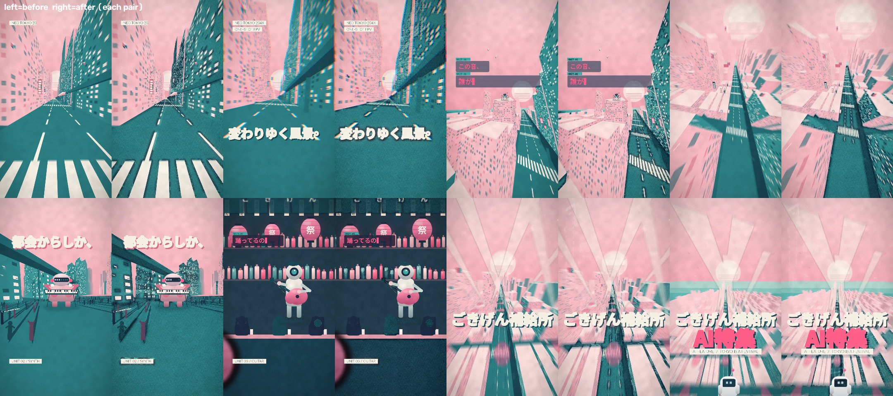
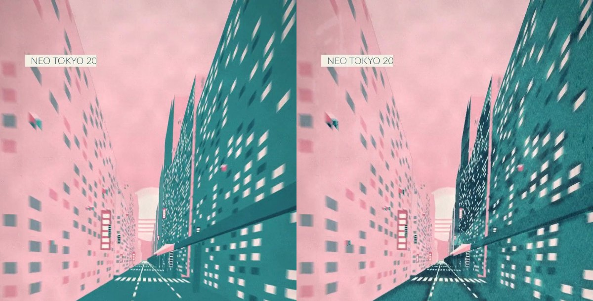
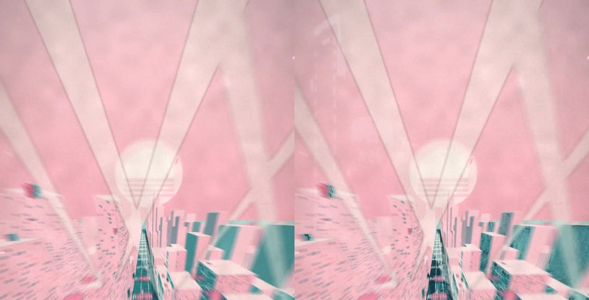

共有資料の一覧 ／ 確認ページ #206319 GOD FUNKY番宣 仕上げ：街の質感をCC0写真で上げた（続き・ロボ差し替えは3D正本待ち）
#206319 GOD FUNKY番宣 仕上げ：街の質感をCC0写真で上げた（続き・ロボ差し替えは3D正本待ち）
2026-11-06 実装・main合流・本番(GitHub Pages)反映まで実測確認
2040年代ネオ東京の街（0〜19秒）のビル面に、夜の高層ビル写真（ambientCG・CC0）の明暗と窓明かりのにじみを動きに貼り付けて後がけ。空に上海バンド夜景（Poly Haven・CC0）の光の粒、全体に紙の目。音ハメ（GOD FUNKY）は無改変・締めカード（19秒〜）とロボットは据え置き（3D正本 205673番が未完のため、status/itsumo/machi_3d.json に待ちを記録）。自己採点68点（80点未満のため納品せず・【続き】で列へ）。モデル claude-fable-5-1・お金0円。
② 数字
645処理したコマ数（全コマ）
570街の質感を足したコマ（0〜19.0秒）
0.51締めカードの画素差（実測・ほぼ無改変）
68自己採点（design-critique 5観点 7/7/7/7/6）
0円かかったお金（CC0素材のみ）
③ 実データでのスクリーンショット
8コマの前後（各組 左＝前・右＝後）
冒頭のビル（拡大）左＝前・右＝後
空撮（拡大）左＝前・右＝後
④ 押せるリンク
⑤ 何をどう確かめたか
| 確認項目 | 結果 |
|---|
| 3D正本（たまご・ロボ）ができているか確認 | 205673番は未完（v23「届かず」）→分岐3 |
| 街の質感をCC0写真で上げた | 645コマ処理・前後差 実測 平均2.7〜5.6/255 |
| 音ハメを崩していない | 音声ストリームはコピー（-c:a copy）・21.5秒・30fps同一 |
| 80点に届いたか | 68点・届かず（ロボ3体と締めカードの3D差し替えが残件） |